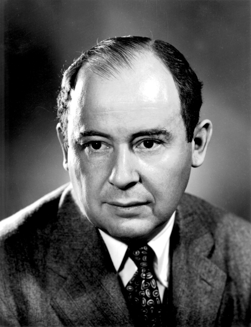
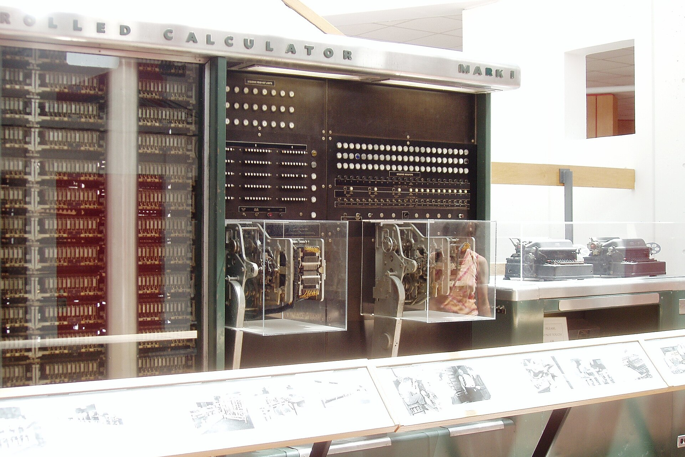
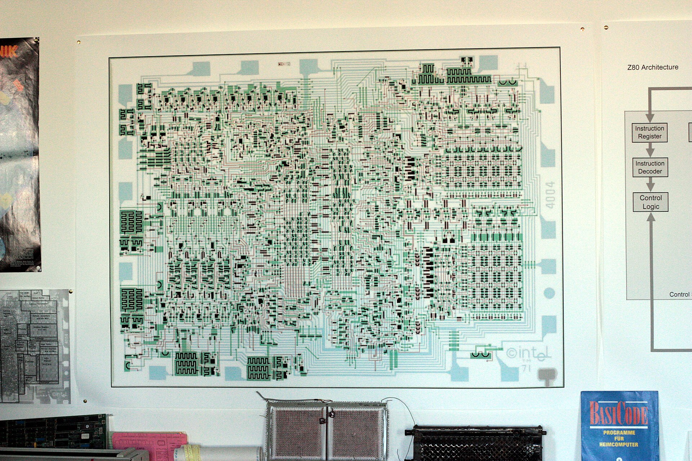
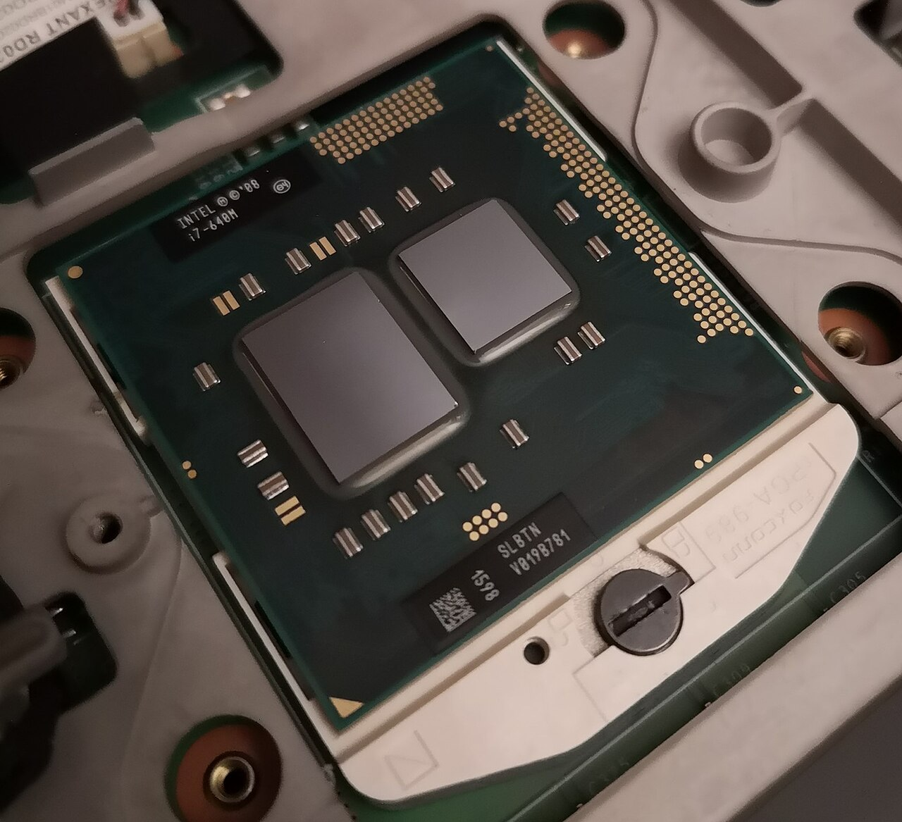
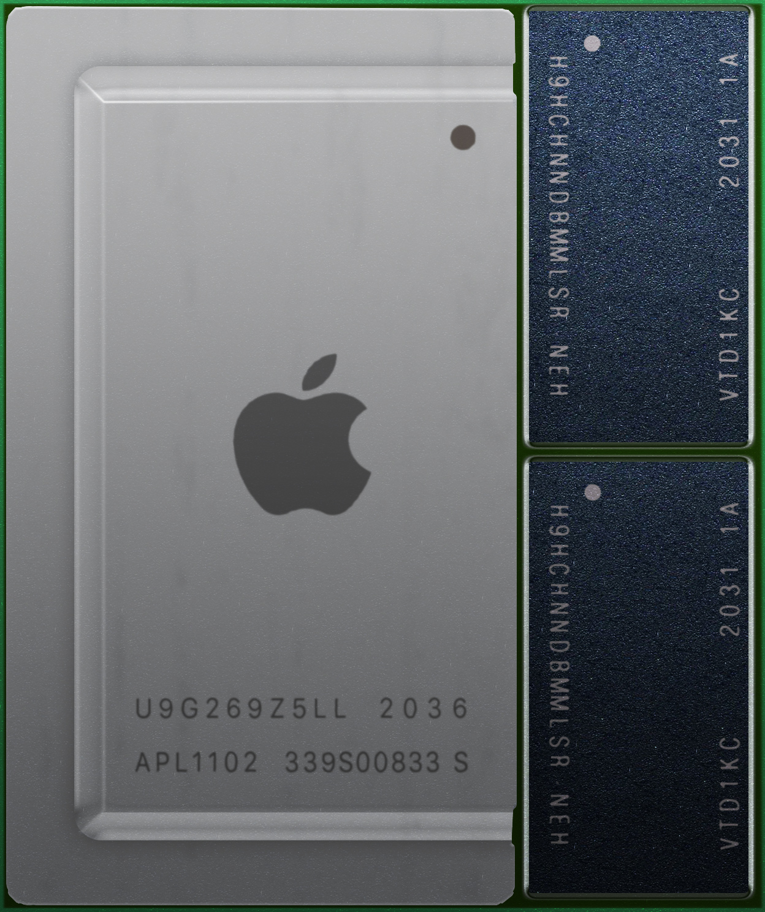
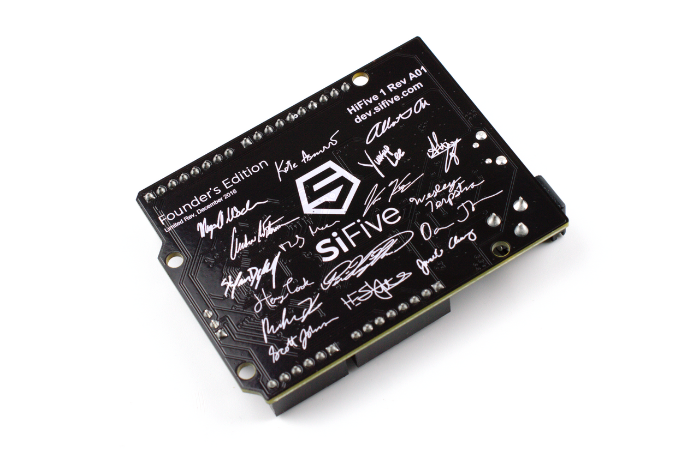
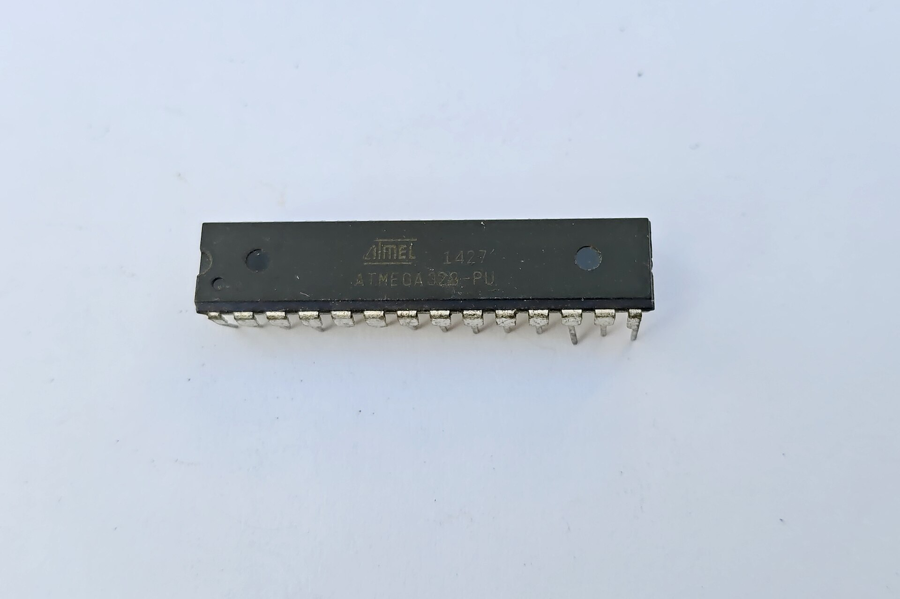
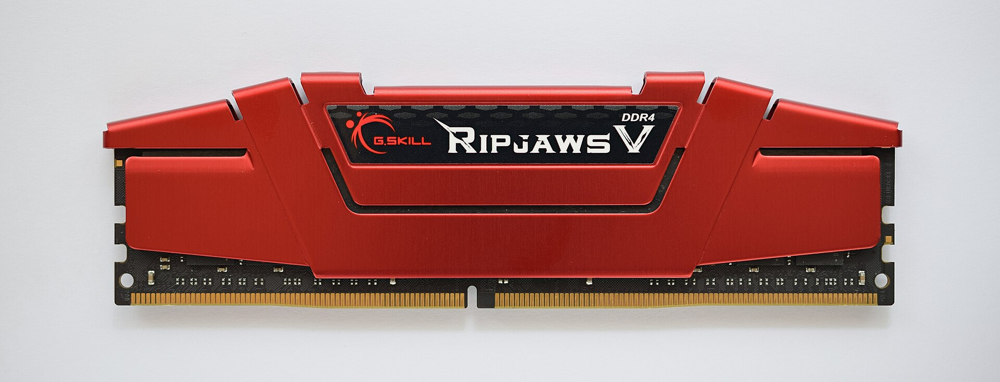
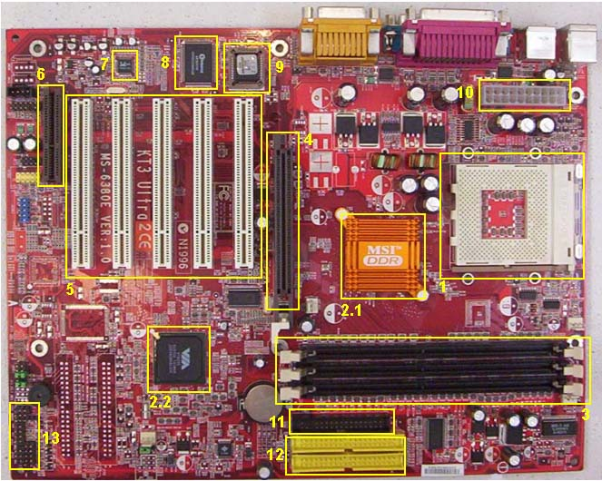

Agenda
Arquitectura de computadoras · 2026
U1 · CPU-2026
Arquitectura
del computador
// fetch → decode → execute
Equipo Buitrago Rios Juan Pablo · Guardia Canche Maria Alexandra
Chay May David Osvaldo · Pech Manrique Argel Jesus
Chay May David Osvaldo · Pech Manrique Argel Jesus
Mapa de la placa
Un recorrido
01
Introducción · von Neumann vs. Harvard
Buitrago Rios Juan Pablo
02
La CPU y el ciclo de instrucción
Guardia Canche Maria Alexandra
03
ISA: CISC vs. RISC
Chay May David Osvaldo
04
Memoria y buses
Pech Manrique Argel Jesus
Presenta · Buitrago Rios Juan Pablo
01 · Introducción
¿Qué es?
Lo que el programador
ve de la máquina
Arquitectura
Qué hace: instrucciones, tipos de datos, direccionamiento, E/S.
Organización
Cómo lo hace: circuitos, señales de control, tecnología de memoria.
Analogía: el plano de una casa vs. los materiales con que se construye.
Presenta · Buitrago Rios Juan Pablo
02 · Modelos de arquitectura
1945 · EDVAC
Von Neumann

John von NeumannPrograma almacenado: datos e instrucciones en la misma memoria.
Problema: un solo bus → cuello de botella.
Presenta · Buitrago Rios Juan Pablo
Foto: Los Alamos National Laboratory (LANL), Wikimedia Commons, uso con atribución.
02 · Modelos de arquitectura
1944 · Harvard Mark I
Harvard

Harvard Mark IMemorias y buses separados para instrucciones y datos.
Más rápido, pero más complejo y costoso.
Presenta · Buitrago Rios Juan Pablo
Foto: Daderot, «Harvard Mark I Computer – Right Segment», Wikimedia Commons, CC BY-SA 3.0.
03 · La CPU
El cerebro
Dentro de la CPU
UC · Unidad de control
Dirige: lee la instrucción y da las órdenes.
ALU · Unidad aritmético-lógica
Calcula: suma, resta, AND, OR, compara.
Registros
PC siguiente · IR actual · MAR/MDR dirección y dato

Intel 4004 · 1971Presenta · Guardia Canche Maria Alexandra
Imagen: Wolfgang Stief, «Intel 4004 Chip Layout», Wikimedia Commons, CC0.
03 · La CPU
Se repite miles de millones de veces por segundo
Ciclo de instrucción
Paso 1
Fetch
Busca la instrucción en memoria usando el PC.
→
Paso 2
Decode
La UC interpreta qué operación es.
→
Paso 3
Execute
La ALU opera y se guarda el resultado.
↺ y vuelve a empezar con PC + 1
Presenta · Guardia Canche Maria Alexandra
03 · La CPU
Ejemplo
Sumar 5 + 7
ADD R1, R2, R3
; R1 ← R2 + R3
; R2 = 5, R3 = 7
REGISTROS AL FINAL
PC
101
101
IR
ADD
ADD
R1
12
12
R2
5
5
R3
7
7
1
Fetch: PC = 100 → se lee la instrucción → IR. PC pasa a 101.
2
Decode: la UC ve «ADD», fuentes R2 y R3, destino R1.
3
Execute: la ALU calcula 5 + 7 = 12.
4
Guardar: R1 ← 12. ¡Siguiente instrucción!
Presenta · Guardia Canche Maria Alexandra
04 · Conjunto de instrucciones
ISA · Instruction Set Architecture
El contrato
software ↔ hardware
Software · programas y compilador
ISA · instrucciones, registros, tipos de datos, modos de direccionamiento
Hardware · el chip que la implementa
Dato clave
Intel y AMD fabrican chips distintos con la misma ISA (x86-64): por eso corren los mismos programas.
Presenta · Chay May David Osvaldo
04 · Conjunto de instrucciones
Dos filosofías
CISC vs. RISC
| CISC · complejo | RISC · reducido | |
|---|---|---|
| Instrucciones | Muchas y potentes | Pocas y simples |
| Longitud | Variable | Fija |
| Ciclos | Varios por instrucción | ≈ 1 (segmentación) |
| Memoria | Casi cualquier instrucción | Solo LOAD / STORE |
| Registros | Pocos | Muchos (32) |
CISC · x86
add eax, [x]
RISC · RISC-V
lw t1, 0(a0)
add t0, t0, t1
Misma suma: 1 instrucción compleja vs. 2 simples.
Presenta · Chay May David Osvaldo
04 · Conjunto de instrucciones
¿Dónde están?
En tu mochila

Intel Core i7x86 · CISC
Laptops y PC de escritorio.

Apple M1ARM · RISC
Celulares, tablets y Mac.

SiFive HiFive1RISC-V · abierta
ISA libre, sin licencias.
Ojo: los x86 modernos traducen sus instrucciones a micro-operaciones tipo RISC.
Presenta · Chay May David Osvaldo
Fotos (Wikimedia Commons): Ptrump16, CC BY 4.0 · Henriok, CC0 · G. Halfacree, CC BY-SA 2.0.
05 · Memoria
Von Neumann vs. Harvard
Hoy: los dos
| Von Neumann | Harvard | |
|---|---|---|
| Memoria | Una, compartida | Dos, separadas |
| Buses | Uno | Dos |
| Velocidad | Cuello de botella | Acceso simultáneo |
| Ejemplo | PC y laptops | Microcontroladores (Arduino) |
Harvard modificada: la CPU de tu PC tiene caché L1 separada (instrucciones / datos) y una RAM común.

ATmega328P · HarvardPresenta · Pech Manrique Argel Jesus
Foto: Suyash Dwivedi, «Atmel ATMEGA328P-PU», Wikimedia Commons, CC BY-SA 4.0.
05 · Memoria
Rápida y pequeña ↔ lenta y enorme
Jerarquía de memoria

Módulo RAM DDR4La caché guarda copias de lo que la CPU usa más, para no esperar a la RAM.
Presenta · Pech Manrique Argel Jesus
Foto: ElooKoN, «RAM Module (SDRAM-DDR4)», Wikimedia Commons, CC BY-SA 4.0. Tiempos aproximados.
05 · Buses
Las carreteras de la placa
Buses del sistema

Placa baseBus de direcciones de 32 bits → 2³² = 4 GiB direccionables.
Presenta · Pech Manrique Argel Jesus
Foto: Appaloosa, «MSI KT3 Ultra ver 1.0 – labeled», Wikimedia Commons, CC BY-SA 3.0.
Referencias
Bibliografía
Calderón Mateos, A. (2016). WepSIM: Simulador modular e interactivo de un procesador elemental para facilitar una visión integrada de la microprogramación y la programación en ensamblador. Enseñanza y Aprendizaje de Ingeniería de Computadores. https://doi.org/10.30827/digibug.41909
Charte Ojeda, F. (2017). Uso de dispositivos FPGA como apoyo a la enseñanza de asignaturas de arquitectura de computadores. Enseñanza y Aprendizaje de Ingeniería de Computadores. https://doi.org/10.30827/digibug.47371
Encinas, D. O. (2026). Modelización y simulación basada en agentes aplicada a la arquitectura de entrada/salida de los computadores paralelos [Tesis, Universidad Nacional de La Plata]. https://doi.org/10.35537/10915/194710
Granda Candás, J. C., López López, J. M., García Vázquez, M., Molleda Meré, J., Usamentiaga Fernández, R., Entrialgo Castaño, J. y de la Calle Herrero, F. J. (2019). Arquitectura de computadores. Universidad de Oviedo. https://hdl.handle.net/10651/74628
Herrera Buitrago, M. F. (s. f.). Diseño de un procesador asíncrono de 8 bits y su implementación en un dispositivo de lógica programable [Tesis, Pontificia Universidad Javeriana]. https://doi.org/10.11144/javeriana.10554.15391
Ortega Lopera, J. (2014). Relatos, mapas conceptuales y arquitectura de computadores. Enseñanza y Aprendizaje de Ingeniería de Computadores. https://doi.org/10.30827/digibug.32207
Rivas Pérez, M. (2015). Diseño e implementación de un simulador software basado en el procesador MIPS32. Enseñanza y Aprendizaje de Ingeniería de Computadores. https://doi.org/10.30827/digibug.36571
Villarreal R., P. A. (2017). Visión moderna de los cálculos básicos en una computadora con estructura de Jhon Von Neumann. Ingeniería UVM, 11(1). https://journal.uvm.edu.ve/index.php/ingenieria/article/view/304